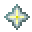

PHASE-08
PHASE-08には「新ウェポン」「新サプライ」が追加されます。
HELLO NEWCOMER
コーラス ❝Chorus❞

最寄りの壁に瞬間移動するシュルかーが、イミテイターとしてBowyersMCへ参戦します。
使用時に東西南北へシュルカーを射出してテレポートする地点を予め定める。
テレポートする時は、対象のシュルカーを見ながら左クリックをすることでテレポートができる。
シュルカーはアリーナにあるものであれば移動ができる為、複数人が同時に使うとシュルカーが奪われる可能性がある。
移動地点を一時的に4つ設定する、エイム重視の転移系ウェポン！
更に詳しい情報はウェポン紹介ページより。
HELLO NEW SUPPLY
カイロス ❝Caerus❞

時間を停止させて移動を制限させるサプライウェポン。
自分の一時的な視力を引き換えに、全ての生存者の動きを制限する事ができるようになる。
移動系ウェポンの利点を全て奪い去れ！
更に詳しい情報はウェポン紹介ページより。
WEAPON ADJUSTMENTS
一部ウェポンのバランスが調整されます。
 ショックウェーバー ❝ShockWaver❞
ショックウェーバー ❝ShockWaver❞
・落下死誘導をキル判定に追加
 トラッパー ❝Trapper❞
トラッパー ❝Trapper❞
・罠発動地点のYaw数値を表示するように
ニンジャ ❝Ninja❞
・スニークしているときに壁張り付きをしないように
・所持時のダイヤモンドブロック効果を上昇
・所持時の壁ジャンプ空腹度減少を11から4に変更
SYSTEM ADJUSTMENTS
・ボスバーの文字に首の水平向き(0~360)を追加
・イルカのペットの上昇バグを修正